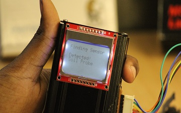
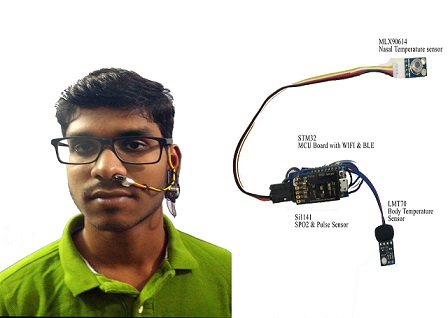
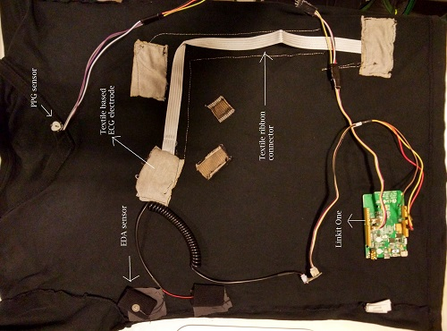
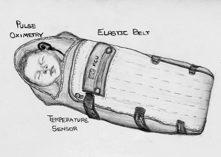
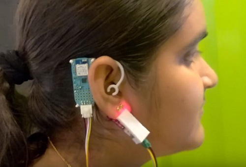
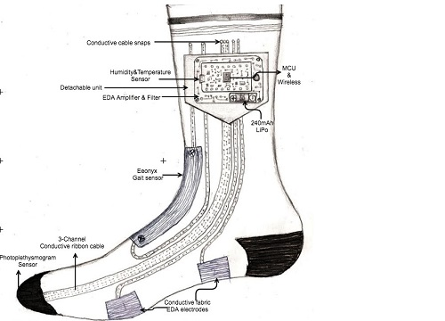

Hello !
Scroll down to see
my portfolio and
Resume
Hey there, please check out the projects I've worked on.
You can contact me by :
Phone: +91 9094963746
E-mail:
ksmanoj95@gmail.com
Manoj Kumar
ABOUT ME: Hello,I'm Manoj and I currently study at Easwari Engineering College, pursuing my Engineering on Electronics and Instrumentation. I've worked at RenaiSense as a Product Designer. I'm from a Hardware Prototyping background and I Design Products focused on Human Computer Interaction. I am passionate about creating innovative technology by mixing the real and virtual world. I have been exploring the interaction between people and computers with different types of interfaces and designs.
I like to focus on creating new design concepts, prototypes and interactive user experiences. My expertise covers the entire design process, from research and strategy to the final visual design and execution.
I am versatile and able to move gracefully within and between three different sets of skills to accomplish various tasks, depending upon the circumstance or the developmental level of the team.
I’m open to sharing my know-how and experience with others. I don’t hesitate to hide my respect or support of anyone walking the same path as I do and trying to achieve something meaningful.
INTERESTS: My interests are in wearable technology, Biomedical applications and Interactive Interfaces. Some of the projects I've developed and designed are User Interactive Interfaces, Agricultural Test Instruments, Wearable devices, remote sensing and Technology for Fun.
EXPERIENCE: I have no formal education in design. I learned everything myself because of my curiosity and hunger for new experience. I started with small challenges before moving on to bigger ones.
DESIGN THINKING: Creating and presenting concepts is my strongest skill, and it’s the stage I like the most in every project I work on. Don’t expect me to rush your project. Instead, get ready for objective.
PRODUCT DEVELOPMENT: Design is not my only field of focus. I’m interested in everything that goes with a product’s development.
Projects:
-

FarmCorder: A low cost sensor based Agro Advisory system that monitors the important health parameters of crops and consolidates the data.
-

Raksh: An ear worn Bluetooth device that non-invasively monitors an infant with pneumonia by tracking respiration rate & blood oxygenation.
-

MedCorder: A wearable continuous fabric based 5 lead ECG monitor with pulse oximetry and sweat analysis for patients with cardiac ailments. Designed as stretchable Tshirt for a comfortable fit.
-

ADITI: An Affordable Diagnostic Thermal Incubator for hospitals in rural areas of India.
-

HaemoCorder:A non-invasive, on-the-go, low-cost device for diagnosing anemia among young girls in rural India that includes a dedicated data management system.
-

Aman Sock:A low cost wearable sock using a simple & innovative idea that helps monitor stress.